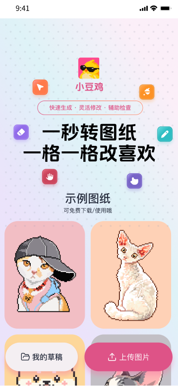
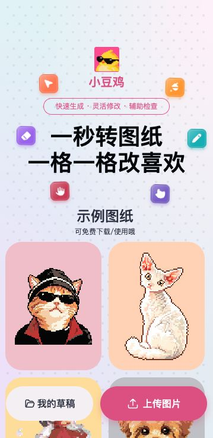

<!doctype html><html><meta charset="utf-8"><title>首页对照</title><style>body{margin:8px;font:14px system-ui;background:#ddd;display:flex;gap:12px}section{width:359px;flex:none}p{margin:0 0 6px}div{height:737px;overflow:hidden}img{display:block;width:359px}.reference{transform:translateY(-37px)}</style><section><p>参考（裁去系统状态栏）</p><div></div></section><section><p>当前实现</p><div></div></section></html>
